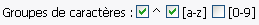
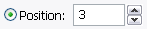
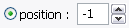

Toutes opérations sont créées dans le panneau - Essentiel -.
Sans le modifier, il est impossible de renommer.
[Les Boutons]
[l'Ordre des Opérations]
[Les Champs d'Options:
Rechercher et Remplacer/Modifier/Déplacer Insérer Modifier la Longueur]
Les Boutons:
Lorsque les boutons sont activés, un bout de texte est inséré dans une zone texte,
et, quand la prévisualisation est effectuée, ce texte sera transformé en opération. Par exemple, en activant la zone
Préfixe puis en cliquant sur le bouton date, le texte «:date:» apparaît, et la date actuelle est
placée en préfixe.
Ce système permets une grande flexibilité, car un bout de texte normal peut-être mélangé avec des opérations. Supposons
qu'un séparateur doit être placé entre le préfixe et le nom d'origine. Après avoir mis la date, entrez «_», la zone
contient maintenant «:date:_», et comme aujourd'hui est le 6 août 1223, les fichiers seront renommés ainsi :
«08-06-1223_fichier.ext»
(Notez que par défaut la date est en style Nord Américain, ce qui peut être changé dans le panneau date et heure)
Il est aussi possible d'ajouter plusieurs opérations ensembles, du moment que le nom final n'ait pas plus de
255 caractères. Le suivant est parfaitement valable:
:numr:_un texte_:date:_:heure:_:№piste:-:artiste:-:titre:
Le bouton sous-rép. insère un séparateur dans le champ rép., qui apparaît comme
le texte ':/'. Pour les autres champs, il ne fait rien.
Le bouton numération insère une séquence numérique. Par défaut,
la numération commence par 1 avec un incrément de 1, et qui est automatiquement rembourrée avec 0 par rapport au
nombre d'objets - donc avec 100 objets, le compteur sera : 001, 002, etc... Tout ces réglages et d'autres
peuvent être changés dans le panneau numération.
Les boutons Date et Heure insèrent la date ou l'heure actuelle, en utilisant comme format
MM-JJ-AAAA et HH.MM.SS, respectivement. Tout ces réglages et d'autres
peuvent être changés dans le panneau Date et Heure.

Le bouton ID3 insère l'information d'une métadonnée ID3 si présente du fichier.mp3.
Je dis 'du' fichier car chaque fichier dans la liste sera analysé individuellement. Pour choisir
quelle métadonnée sera insérée, utilisez la liste déroulante située juste à coté. Si un fichier mp3 ne
contient pas la métadonnée demandée, un espace est inséré. Les autres genres de fichiers sont ignorés.
l'Ordre Des Opérations:
L'ordre par lequel les opérations seront effectuées. Celui-ci est différent de l'ordre de
l'interface (mais plus logique, je l'espère).
- Modification de la Longueur
- Rechercher et : Remplacer, Modifier, ou Déplacer
- Préfixe
- Suffixe
- Insérer
- Répertoire
Les Champs d'Options:
Le coeur de Métamorphose. Toutes les opérations commencent ici.
Ces cases à cocher permettent de choisir quelle partie du nom sera modifiée.
Si Le Nom est coché, les répertoires et les noms des fichiers seront modifiés.
Si L'extension est coché, les extensions des fichiers seront modifiées.
Permets d'ajouter un répertoire (dossier) et d'y placer tous les objets à renommer.
il est possible d'ajouter des sous-répertoires avec le bouton sous-rép., ainsi que
d'utiliser tous les autres boutons décrits ci-dessus.

Ajouter un préfixe aux objets.
Ajouter un suffixe aux objets.
un outil très puissant pour effectuer une recherche puis de modifier le résultat de façons
différentes. La plupart des opérations sont effectuées de cette manière.
Il est possible de rechercher par texte simple, par expression régulière, ou par position. Le résultat
peut être remplacé, changé de majuscule en minuscule (entre autres), ou bien déplacé.
Le texte à trouver. N'importe quel caractère peut être entré - pour chercher un espace,
il suffit d'appuyer sur la barre d'espace. Si ce champ est laissé vide, le résultat de la
recherche est le nom entier.
Différencier entre majuscules et minuscules.
Trouver par expression régulière. Chaque occurrence sera traitée. Cocher I pour ne pas différencier
entre majuscules ou minuscules (Insensible à la casse), cocher U pour chercher en Unicode (par
exemple pour trouver des caractères comme «â, ¥, Д» avec «\w»).

Chercher un groupe de caractères par expression régulière. ^ trouvera tout caractère qui n'est
PAS dans le groupe, [a-z] trouvera tout caractère alphabétique (majuscule et minuscule), et
[0-9] trouvera tout caractère numérique.
Ces groupes peuvent être utilisés sans définir une expression régulière. Sinon, l'expression régulière
est compilée ainsi : « (expression régulière) | (groupe de caractères) »
Aussi, «[a-z]» n'est pas vraiment «[a-z]», mais «[^\W\d]» pour un meilleur rendement sous Unicode.

Trouver par position. Le premier numéro spécifie la position de départ. 0 est toujours le premier
caractère du nom.
Le nombre de caractères à trouver. Ne vous inquiétez pas si ce nombre est supérieur à la longueur
du nom.
Spécifier de commencer par le début ou la fin du nom. Si la fin est choisie,
la valeur de la position est alors calculée automatiquement par rapport à la longueur.
Remplacer chaque occurrence avec une opération ou un texte. Si une expression régulière est utilisée,
il est permis d'utiliser une référence arrière (anglais : backreference), par exemple «\1».

Changer de majuscules en minuscules et vice-versa de manières différentes (changer la casse).
Déplacer la première occurrence.
Utiliser une position fixe. 0 = premier caractère, 1 = deuxième caractère,
-1 = dernier caractère
Utiliser un texte pour calculer le déplacement. Il est possible de déplacer avant, après, ou bien
remplacer ce texte. Si aucune occurrence du texte n'est trouvée, rien n'est fait. L'utilisation
d'expressions régulières est permise.
|
Cette ligne permet d'insérer un texte ou une opération à un point précis du nom.

Spécifier un point absolu pour insérer le résultat de la recherche. Commence par 0 et
forme un boucle, donc 0 = premier caractère, 1 = deuxième caractère, -1 = dernier caractère.
|
Changer la longueur du nom de façons différentes.
Comment modifier la longueur. Couper raccourcira le nom à une taille définie, Rembourrer le rallongera,
et Les Deux, incroyablement, fait les deux.
La nouvelle taille du nom. Si Rembourrer est utilisé est le nom est déjà au moins cette
longueur, ou si Couper est utilisé et que le nom est déjà au plus cette longueur, rien
n'est fait. Les Deux, d'une manière ou d'une autre, mettra tout les noms à exactement la même longueur.
Direction de la modification.
Le caractère à utiliser pour le rembourrage. Tous les caractères sont permis.
Spécifier un point absolu pour insérer le commencement du rembourrage. Si laissé à 0, alors
ce sera le premier caractère de la direction choisie. Si autre que 0, le fonctionnement
est alors similaire à insérer à position (0 = premier caractère, 1 = deuxième caractère,
-1 = dernier caractère), et ignore la direction.
|